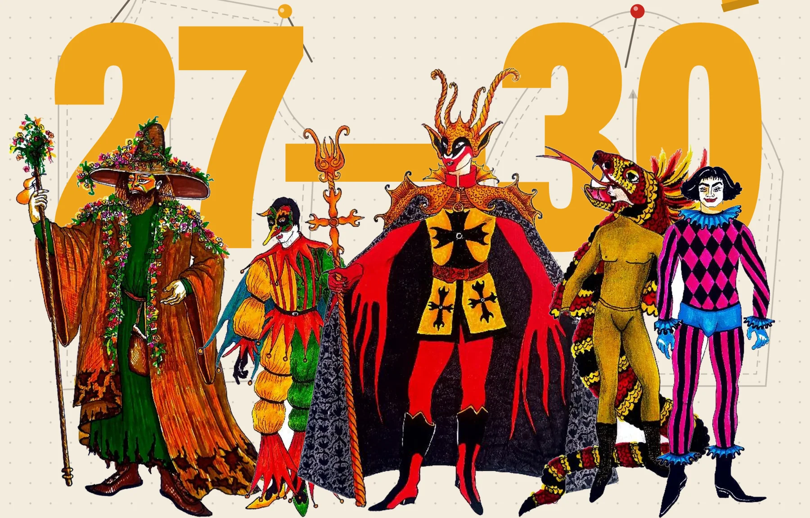

Universidad de Caldas · Manizales · 27 al 30 de octubre de 2026
XXI Festival Internacional de Teatro Universitario
VI Coloquio Internacional de Investigación Creación en Artes Escénicas
Cuatro días de teatro, danza, performance, master classes y conferencias. Trece montajes de universidades de Colombia, Argentina, Brasil y Perú.
Homenaje al maestro Felipe Millán

Primer día · Martes 27
Ver el día completo →- 3:30 p.m.hasta 4:05 p.m.
Obra
IRUN — Instalación Performativa
Institución Universitaria Bellas Artes y Ciencias de Bolívar · Cartagena, Colombia
- 6:30 p.m.hasta 7:30 p.m.
Explora la programación
Día a díaPor díaLo que pasa cada día, hora por hora.Del 27 al 30La semanaToda la programación de un vistazo, con filtros.Por salaEscenariosQué ocurre en cada teatro, aula y salón.13 montajesObrasFichas, sinopsis y equipos de cada obra.VI ColoquioMaster classes y conferenciasSeis master classes y siete conferencias.Cómo llegarSedesBellas Artes, Bicentenario y Rogelio Salmona.